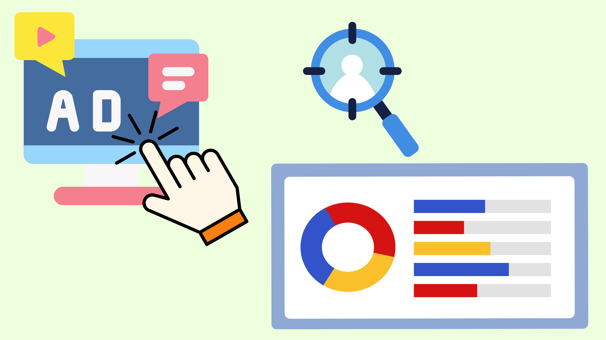

User Behavior Analysis for Ad Click Prediction

1. Problem Statement & Marketing Context
Digital advertising campaigns frequently face high budget burn rates due to broad targeting, resulting in low Click-Through Rates (CTR) and sub-optimal conversion performance.
Core Objective: Perform rigorous Exploratory Data Analysis (EDA) to uncover the primary demographic and behavioral factors influencing ad click decisions, and train supervised Machine Learning models to predict user click probability for targeted ad delivery.
2. End-to-End ML & Analytics Workflow
1. Data Cleaning
Handled missing values, encoded categorical variables, and removed outliers.
2. Bivariate EDA
Mapped correlation matrices and behavioral distributions vs. click status.
3. Model Training
Evaluated Logistic Regression, Random Forest, and XGBoost with Cross-Validation.
4. Feature Importance
Extracted key predictive features to inform ad campaign strategies.
3. Key Findings & Campaign Optimization Strategies
| Analytical Driver | Behavioral Insight | Actionable Strategy |
|---|---|---|
| Time-of-Day Dynamics | User engagement and click probability significantly spike during evening leisure hours compared to working hours. | Dayparting Ad Bids: Allocate higher ad budget bids dynamically between 19:00 - 23:00 to maximize ad impression conversions. |
| Device & Channel Segment | Mobile users showed a distinct preference for visual-heavy, concise ad creatives with higher immediate click rates. | Creative Tailoring: Restructure ad creatives specifically for mobile devices with clear, prominent Call-to-Action (CTA) triggers. |
| Predictive Target Filtering | Random Forest model achieved 85% accuracy in pre-identifying non-clicking user profiles. | Negative Audience Filtering: Exclude low-probability user segments from expensive campaign runs to dramatically reduce Cost per Click (CPC). |
Review the Python Notebook
Explore the full data exploration code, visualizations, and model evaluation metrics on GitHub.
View Jupyter Notebook